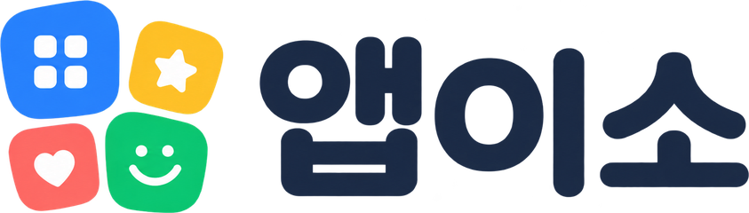
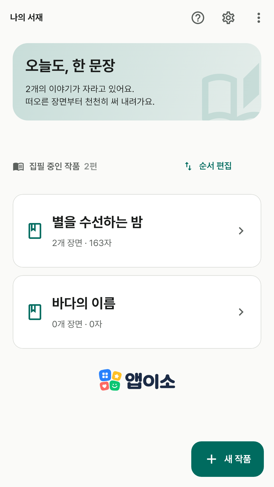
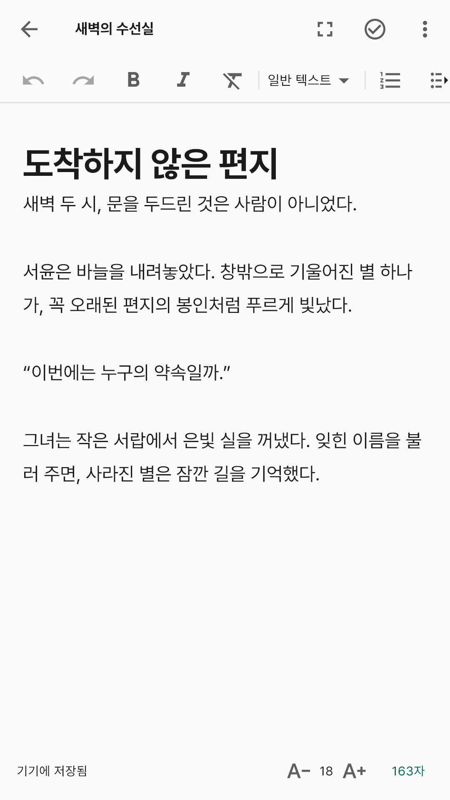
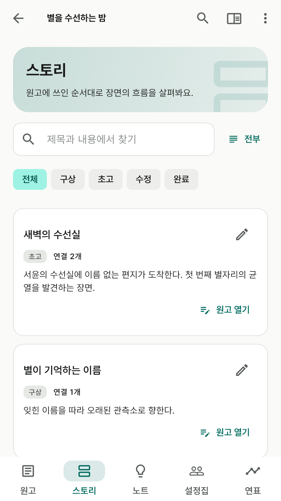
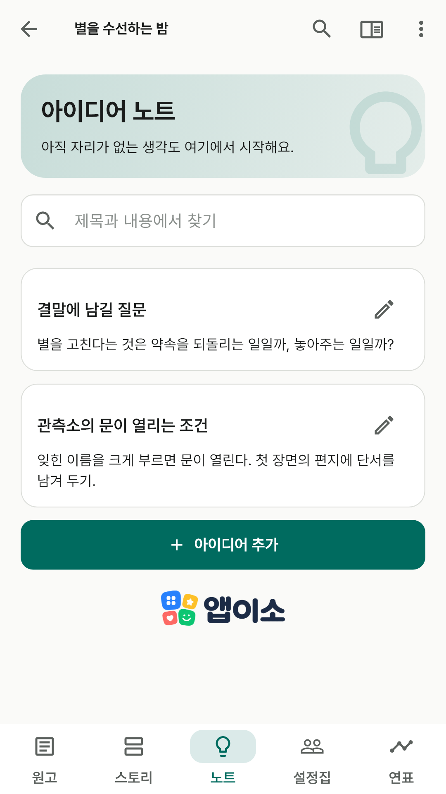
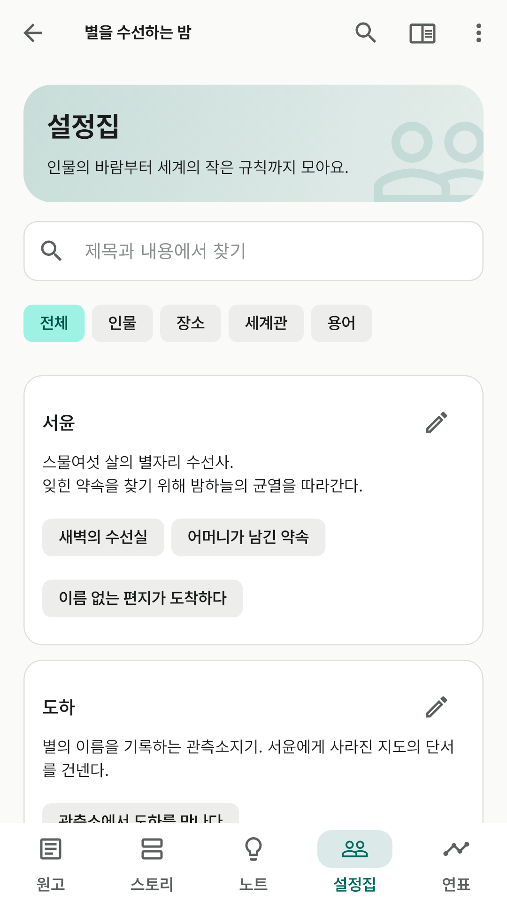
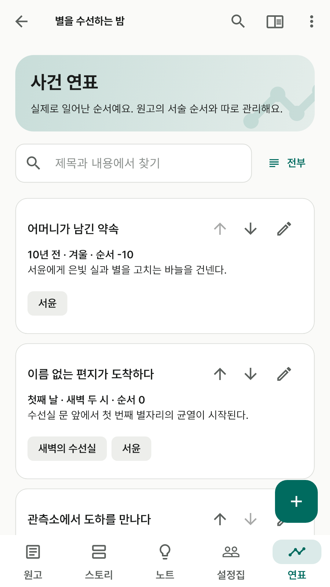
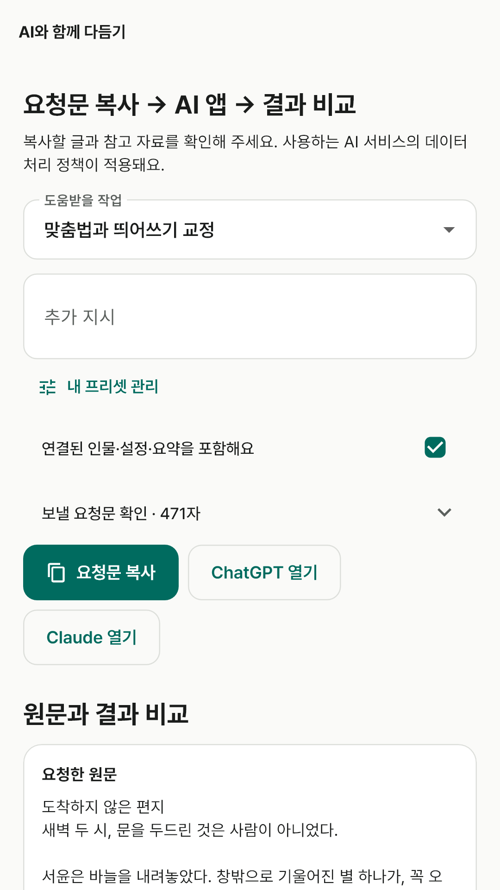

앱이소 글쓰기 · Android · Windows
떠오른 장면부터 써 내려가세요.
원고와 인물, 아직 이름 없는 아이디어까지 한 작품 안에 모아요.
광고도 인앱 결제도 없어요. 가입 없이, 오프라인으로 집필해요.
원고는 기기에 저장하고 개발자 서버에 보내지 않아요. Google Drive에 연결하면 내 Drive의 앱 전용 공간으로 동기화해요.
외부 AI나 웹페이지, 사용자가 고른 외부 저장 위치에는 해당 제공자의 정책이 적용돼요.
여러 작품을 서재에 모으고 부·장·장면 목차와 본문 제목을 오가며 긴 이야기를 나눠 써요. 글자 크기와 줄 간격도 편하게 맞춰요.
스토리보드로 장면의 흐름을 보고, 인물과 설정을 연결해요. 사건 연표는 이야기 속 시간으로 따로 정렬해요.
자동 저장과 수정 이력, 작품 파일 백업을 제공해요. TXT·Markdown·Word로 원고를 꺼낼 수 있어요.
필요한 문맥을 요청문으로 복사해 외부 AI에 직접 붙여 넣어요. 받은 결과는 원문과 비교하고 직접 적용해요. 외부 서비스의 요금은 해당 서비스에 따라요.
촬영용 창작 예시를 넣은 실제 앱 화면이에요. 옆으로 넘겨 볼 수 있어요.







Windows 10·11(64비트)용 PC 버전이에요. 받은 zip의 압축을 풀고 writing.exe를 실행해요. 따로 설치하지 않아요.
휴대폰과 PC의 원고는 내 Google Drive를 거쳐 주고받아요. 두 기기의 클라우드와 원고 보호에서 같은 Google 계정으로 연결해 주세요. Google Drive를 쓰지 않으면 동기화할 수 없어요. 이때는 작품 백업 파일로 옮길 수 있어요.
처음 실행할 때 “Windows의 PC 보호” 창이 뜨면 추가 정보 → 실행을 눌러 주세요. 원고는 앱 폴더 밖의 사용자 데이터 폴더에 저장돼서, 새 버전 zip으로 바꿔도 그대로예요. 중요한 원고는 작품 백업도 함께 보관해 주세요.